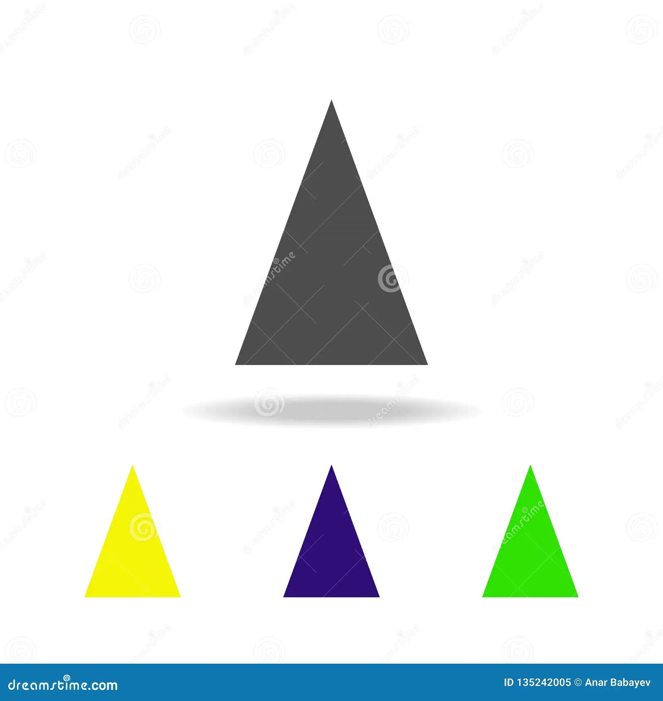

TRIANGULO ISOCELES
🔺 ¿Qué es un triángulo isósceles?
Es un triángulo que tiene dos lados de igual longitud y un tercer lado diferente, llamado base. Los ángulos opuestos a los lados iguales también son iguales entre sí.
📐 Propiedades principales
Dos lados congruentes (iguales).
Dos ángulos iguales, ubicados en la base.
Simetría: si trazas una línea desde el vértice opuesto a la base hasta el centro de la base, divides el triángulo en dos partes iguales.
La altura, mediana, bisectriz y mediatriz desde el vértice coinciden en una sola línea.
🧮 Fórmulas útiles
Perímetro:
𝑃
=
2
𝑎
+
𝑏
, donde
𝑎
es el lado igual y
𝑏
la base.
Altura:
ℎ
=
𝑎
2
−
(
𝑏
2
)
2
Área:
𝐴
=
𝑏
⋅
ℎ
2
🔍 Tipos de triángulos isósceles según sus ángulos
Rectángulo isósceles: un ángulo de 90° y dos de 45°.
Acutángulo isósceles: todos los ángulos menores de 90°.
Obtusángulo isósceles: un ángulo mayor de 90°.
🧠 Curiosidades
La palabra “isósceles” viene del griego isos (igual) y skelos (pierna).
Si doblas un triángulo isósceles por su eje de simetría, ambos lados coinciden perfectamente.
